Descubrí que vos también podés
Seguí un método claro y disfrutá cómo tu primer cuadro va tomando forma.

RETazos con alma · ARTE KINUSAIGA
Un rato de calma solo para vos y, al final, una obra hecha con tus manos para decorar tu casa, regalar o vender.
Pago único con Mercado Pago · Acceso Inmediato después del pago · Acceso de por vida
DE UN RETAZO GUARDADO A UNA OBRA HECHA POR VOS
Transformá retazos y telas que ya tenés en cuadros con relieve para decorar tu casa, emocionar con un regalo hecho por vos o vender tus propias creaciones. Las plantillas y la guía te acompañan desde el primer corte hasta la obra terminada, aunque hoy empieces de cero.
Seguí un método claro y disfrutá cómo tu primer cuadro va tomando forma.
Convertí telas guardadas y recuerdos especiales en una obra que permanezca.
Prepará una pieza única, hecha con tus manos y pensada para alguien especial.
Enmarcá tus cuadros y usá el kit incluido para presentarlos y ofrecerlos.
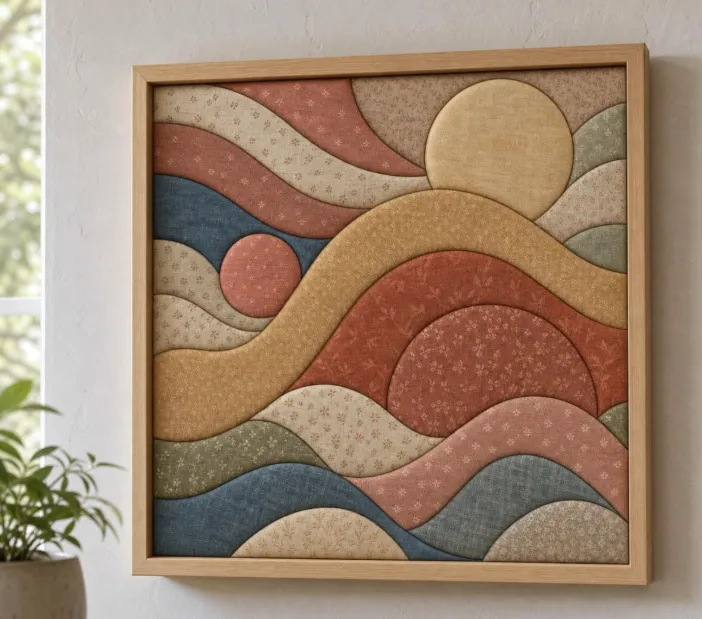
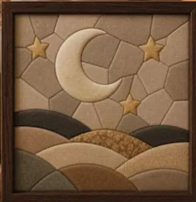
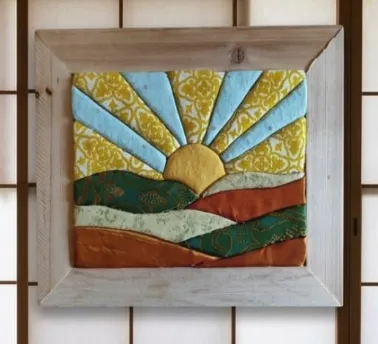
HECHO POR VOS · LISTO PARA MOSTRAR
COLECCIÓN COMPLETA
Una guía para aprender la técnica y una biblioteca de proyectos para seguir creando después del primer cuadro.
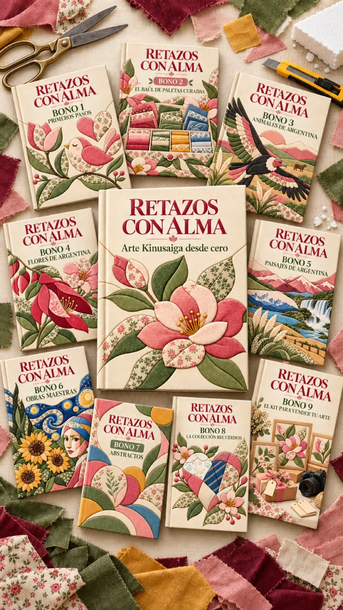
Recibís el acceso por correo después de acreditarse el pago.
MÁS SIMPLE DE LO QUE PARECE
No necesitás experiencia ni habilidades especiales. Elegís una plantilla, seguís las líneas y encastrás cada retazo en su lugar. El método te acompaña paso a paso para que disfrutes cómo una tela común se convierte en una obra hecha por vos.
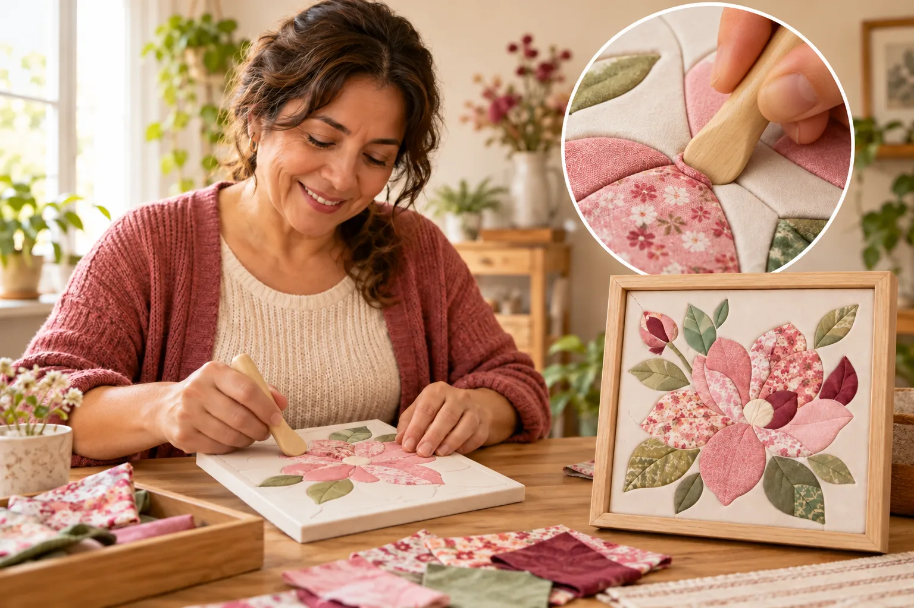
La tela se encastra sobre la base. No usás aguja, hilo ni máquina.
Los diseños ya vienen preparados y listos para imprimir.
Podés empezar con retazos y elementos fáciles de conseguir.
Si podés seguir una guía paso a paso, podés crear tu primer cuadro de kinusaiga.
UNA TÉCNICA VISUAL
Elegís un diseño, imprimís la plantilla, marcás las ranuras sobre telgopor y encastrás los bordes de cada retazo. El modelo terminado te muestra el resultado y la paleta indica qué color corresponde a cada número.

UN VISTAZO ADENTRO
La plantilla y el modelo representan el mismo diseño. Los números de la plantilla corresponden con los colores sugeridos.

Ves cómo puede quedar la obra, su dificultad y una combinación de colores posible.

Transferís las líneas a la base y seguís los números para ubicar cada retazo.
Las plantillas están preparadas para imprimir en A4 al 100% e incluyen un cuadrado de control para comprobar la escala.
MANUAL + 9 BONOS
Cada tapa corresponde a un archivo digital incluido en la compra.
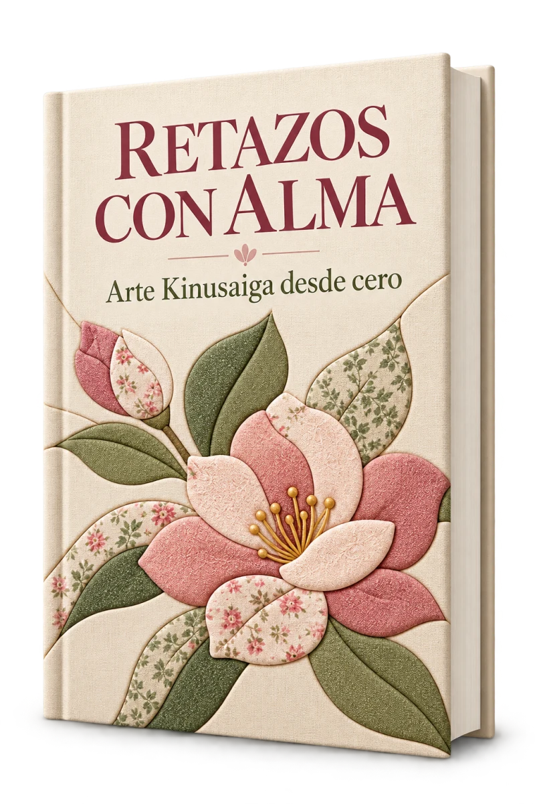
22 páginas con materiales, impresión, transferencia, encastre, correcciones y terminaciones.
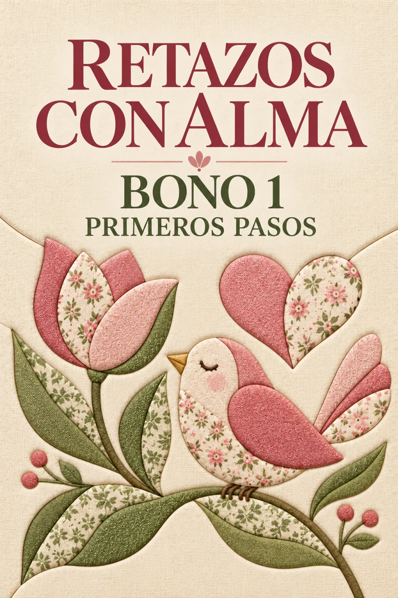
5 proyectos de dificultad gradual para practicar la técnica.
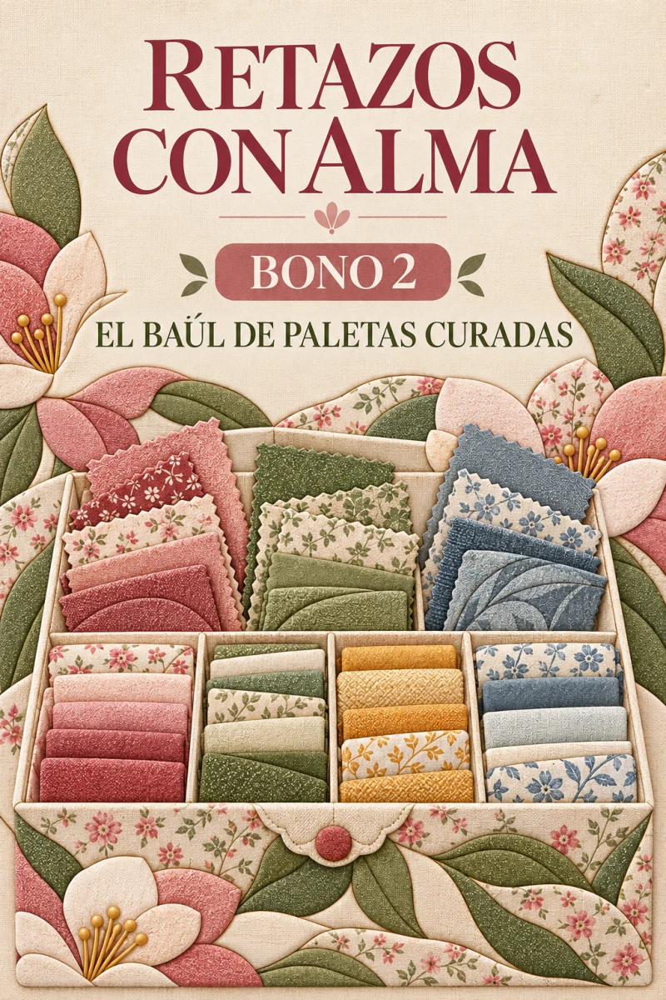
8 combinaciones temáticas para elegir y sustituir colores.
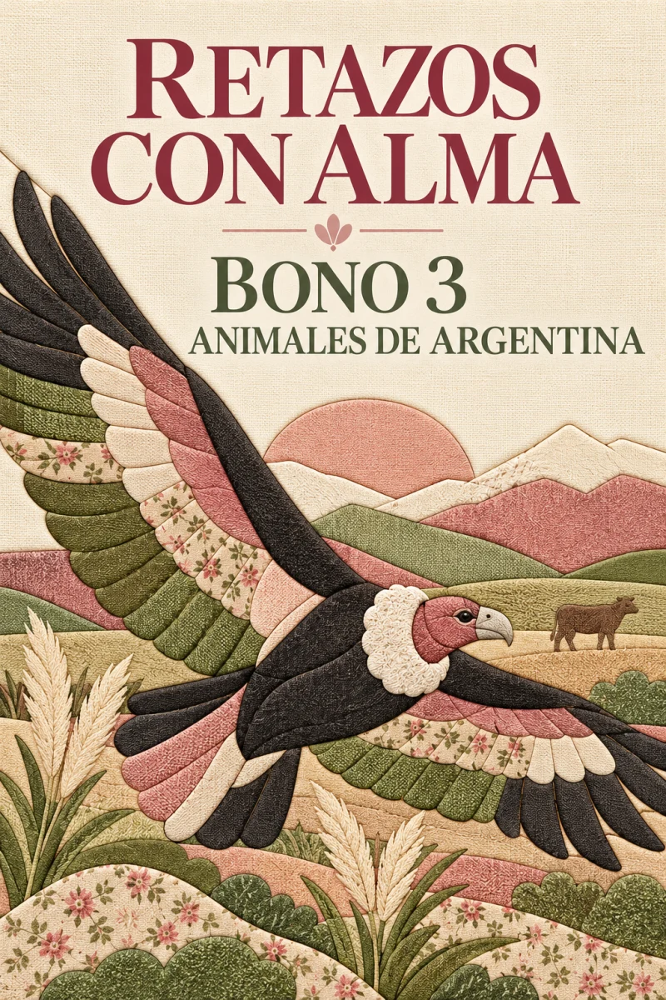
20 diseños con su modelo terminado y plantilla.
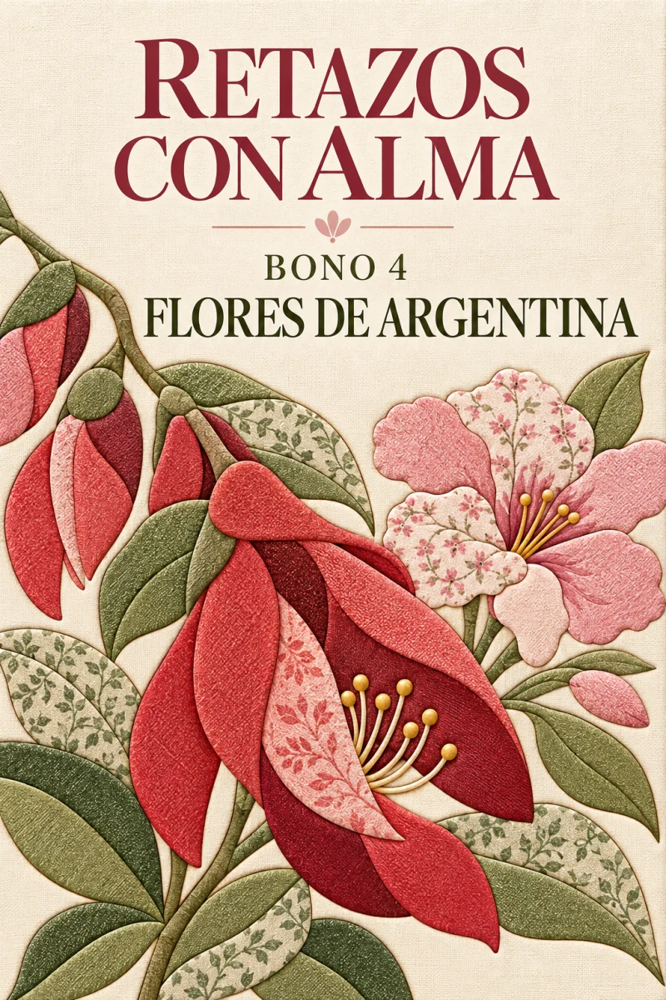
20 diseños inspirados en flores de nuestro país.
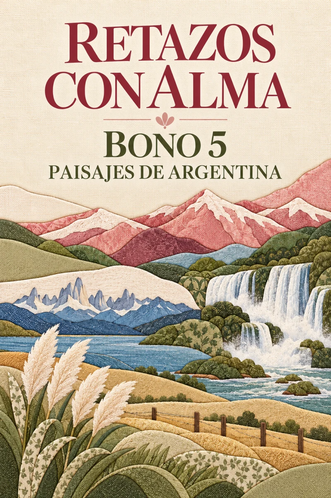
20 diseños de lugares reconocibles del país.
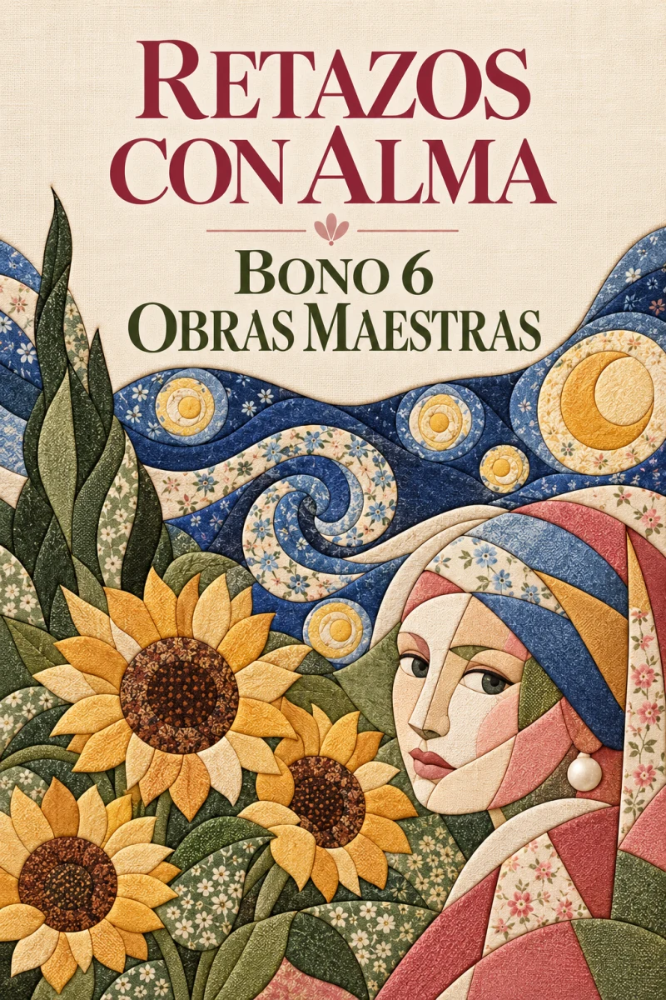
20 reinterpretaciones didácticas de obras de dominio público.
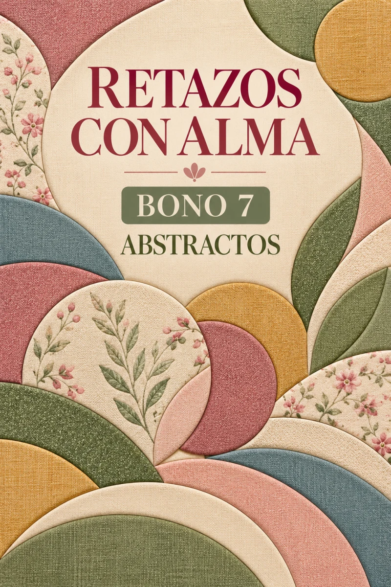
20 composiciones contemporáneas con dificultad gradual.
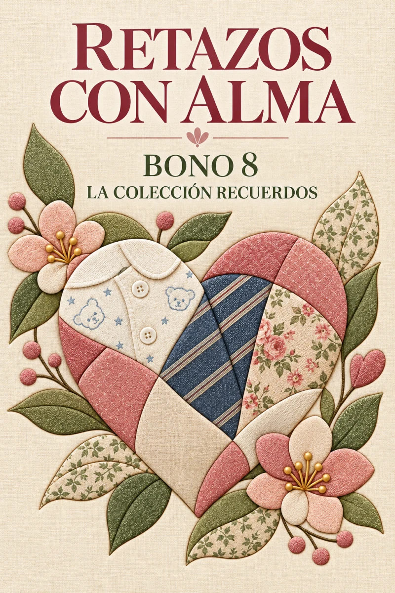
10 ideas para transformar prendas y telas con valor emocional.
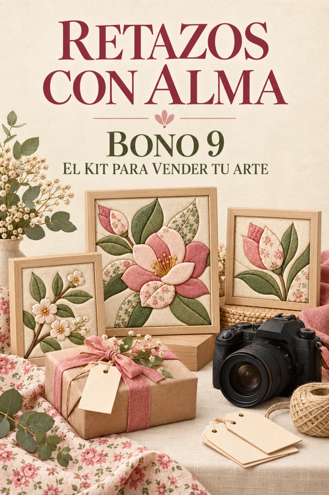
Precios, fotografía, presentación, embalaje y canales de venta.
IDEAS PARA TUS TELAS


CREACIONES DE LA COMUNIDAD
MATERIALES ACCESIBLES
La compra es digital. No incluye materiales físicos.

ACCESO SIMPLE
Completás la compra mediante Mercado Pago.
Después de la acreditación te llega un correo con el enlace.
Descargás los archivos y conservás el acceso de por vida.
PRECIO DE LANZAMIENTO
Recibís el manual principal, 115 diseños completos, 230 láminas A4, 8 paletas curadas y los nueve bonos.
GARANTÍA
Si el material no es para vos, podés solicitar la devolución dentro de los siete días posteriores a la compra escribiendo a puntoycoma.fq@gmail.com.
PREGUNTAS FRECUENTES
No. La tela se encastra sobre la base y trabajás con diseños listos para imprimir.
Un manual de fundamentos, 115 modelos terminados, 115 plantillas numeradas, 8 paletas de colores y los nueve bonos.
No. Retazos con Alma es un producto digital. Las telas, el telgopor y las herramientas no están incluidos.
Después de acreditarse el pago recibís un correo con el acceso para descargar el contenido.
Sí. Podés imprimirlas nuevamente y crear distintas versiones con otras telas y colores.
Sí. La licencia permite vender las piezas físicas que realices. No permite revender ni compartir los archivos digitales.
El acceso es de por vida. Podés descargar y conservar los archivos.
Tenés siete días desde la compra para solicitar una devolución.
RETAZOS CON ALMA
El método, los modelos y las plantillas ya están preparados. Solo necesitás elegir tu primer diseño.
Mercado Pago · Acceso de por vida · Garantía de 7 días